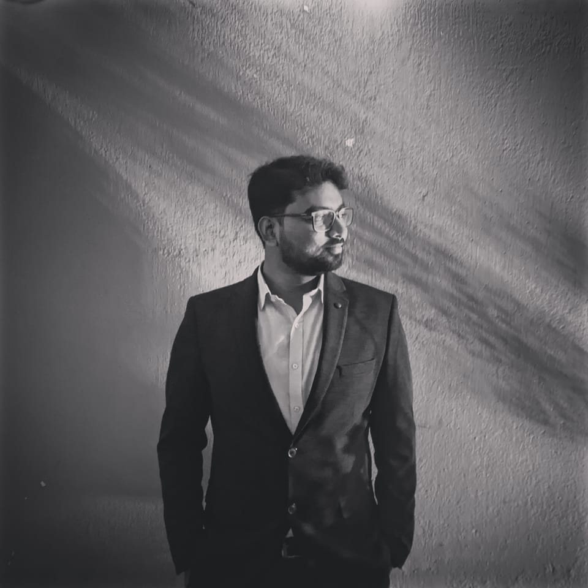

Sourav Biswas
Profile-
A diligent Computer Science Engineer with expertise in database management and web development with an infectious positive attitude and interpersoneel skills.
Education-
- B. TEch in Computer Science and Engineering.
Adamas University (2022)
- Intermediate (PCM) from WBCHSE Board (2015)
- High School (Science) from WBBSE Board (2013)
Experience-
- Data Assosiate L2
Amazon.com (July - Present)
- Data Management Support
Swiggy (Nov 2022 - June 2023)
- IT Executive
Franciscan Solution Pvt. Ltd. (May 2022 - Oct 2022)
Professional Skills-
Technical:
Conflict Resolution, Critical thinking, Adaptability, Collaboration, Strong work ethics.
Personal:
Realilstic, Social, Conventional, Artistic.
Activities & Achievements-
Co-Curricular:
- Experienced in ERP(Enterprise Resource Planning) System.
- Expertise in Database management- Oracle, My SQL
- Web Developer
Extra Curricular:
- United Nation Volunteer.
- Assiciated with social organization 'Bloodmates'.
- Participated in Internation Essay COmpetition by Goi Peace Foundation, Japan.
- Published Author.
Personal Details-
Father Name: Someswar Biswas
Mother Name: Hira Biswas
DOB: 27.02.1997
Declaration-
- Declaired that the above information is true.